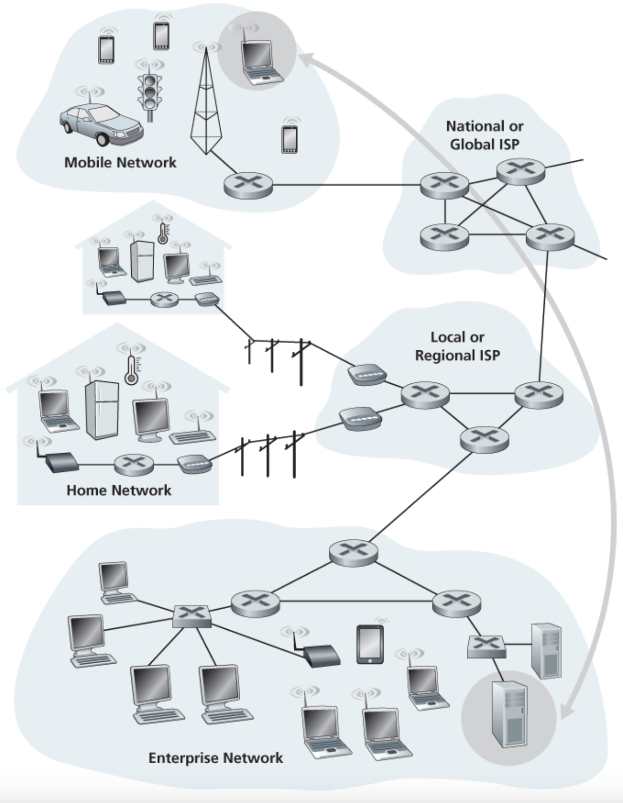
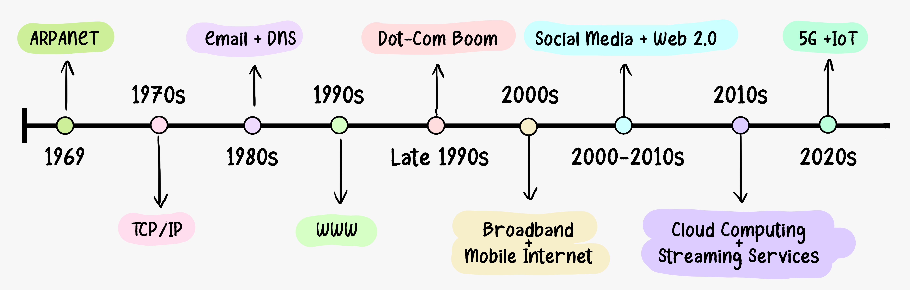
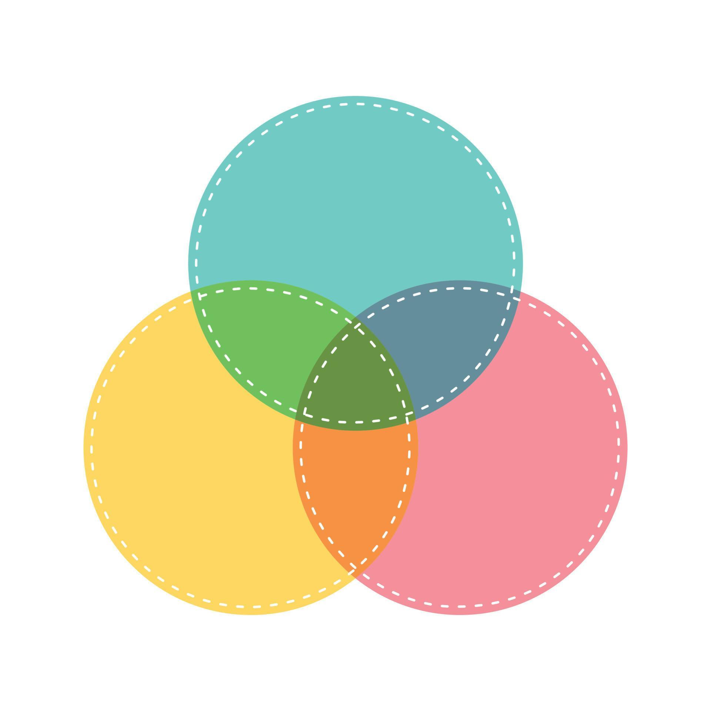
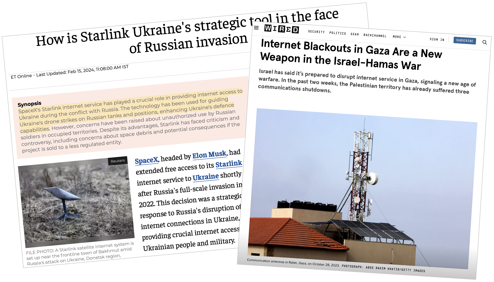
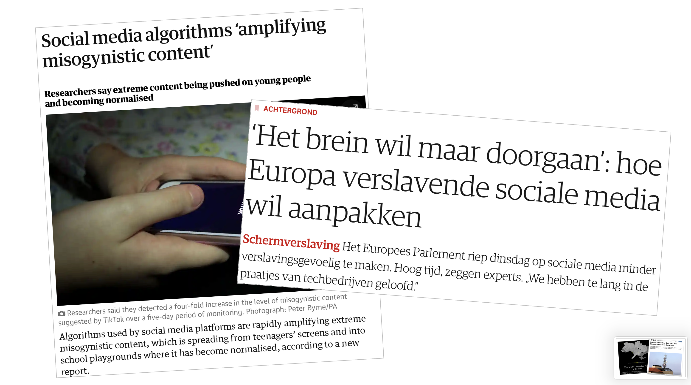

Prolegomena
| Bachelor Digital Society | Period |
|---|---|
| Digitalisation and Politics | DSO1002 | 2 |
| Introduction to Digital Technologies I | DSO1503 | 2 |
| What is Research? | DSO1504 | 3 |
| ICT Revolutions | DSO1003 | 4 |
| Using Digital Sources | DSO1505 | 4 |
| Digital Cultures | DSO1004 | 5 |
| Introduction to Digital Technologies II | DSO1506 | 5 |

Historical
History of Internet and World Wide Web
Social Media and Social Networking
Technical
Nuts and bolts of computer networking
Cyber Security
Science Communication
Scientific storytelling




| # | Date | Tutorial (Tuesday) | Lecture (Tuesday) |
|---|---|---|---|
| 1 | 14.04 | Discussion: Nuts and Bolts of Network Communication Hands on: ping, netstat, traceroute|tracert |
- |
| 2 | 21.04 | The basics of scientific communication Discussion: Scientific Storytelling |
- |
| 3 | 28.04 | Discussion: The History of the Internet Discussion: What questions arise from today's perspective now that we know how the Internet got started? |
Lecture 2: The Origins of the Internet |
| 4 | 12.05 | Discussion: The WWW and Beyond Discussion: Social Media and Social Networking |
Lecture 3: The WWW and Beyond |
| # | Date | Tutorial (Tuesday) | Lecture (Tuesday) |
|---|---|---|---|
| 5 | 19.05 | Discussion: Network Security Hands on: Analysing network packages with WireShark |
Lecture 4: Network Security |
| 6 | 26.05 | Final presentations (video explainers | podcasts) Wrapping up, conclusions, evaluation |
- |
| 7 | Exam Week | Oral Exam |
To pass the course, you must obtain a Pass (P) for all three components.